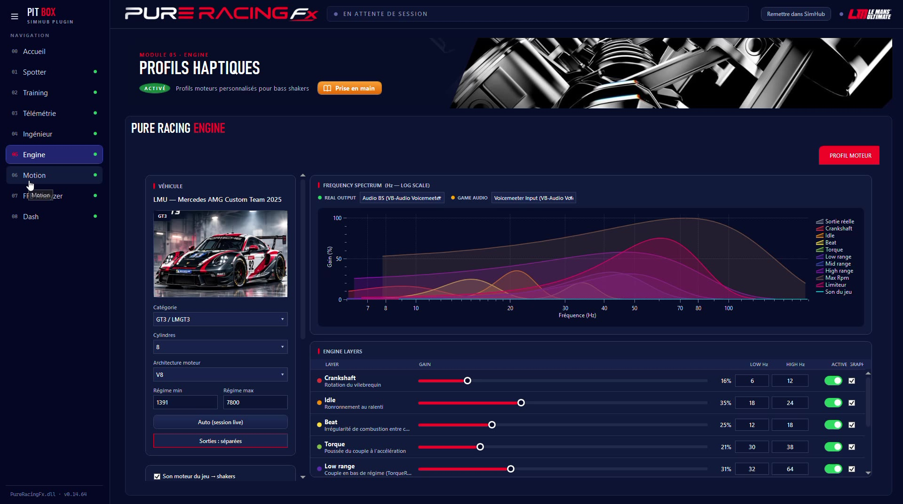
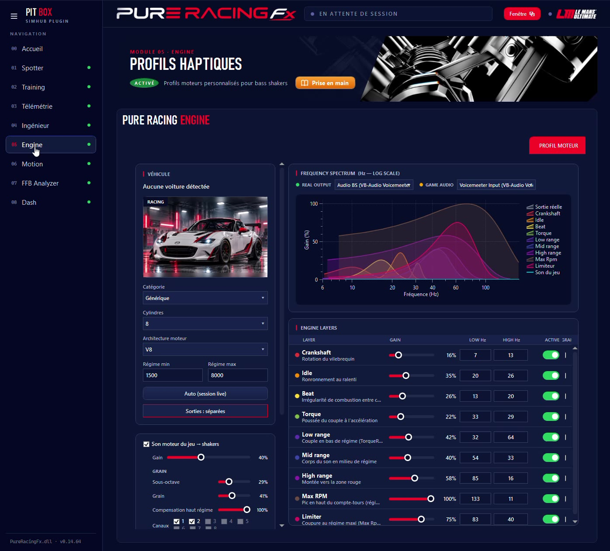

Engine crée des profils moteur pour les bass shakers de SimHub, adaptés à chaque voiture : l'architecture du moteur, ses régimes, ses couches de vibrations. Il reconnaît la voiture et charge son profil tout seul.
Engine part de la voiture détectée (catégorie, cylindres, architecture, régime mini et maxi) et construit les couches de vibrations du moteur.

Les couches se règlent aussi depuis une tablette ou un téléphone du même Wi-Fi, pendant que tu roules : tu sens le résultat tout de suite.

| Point | Ce qu'il faut savoir |
|---|---|
| Matériel | Un ou plusieurs bass shakers (transducteurs) branchés sur une carte son, gérés par SimHub ShakeIt. |
| Jeux | Le Mans Ultimate en priorité (templates) ; les jeux reconnus par SimHub. |
| Sortie audio | Le spectre peut écouter la sortie réelle de tes shakers pour vérifier le rendu. |
Les mouvements de ta voiture sur ton moniteur, ou sur ta plateforme.